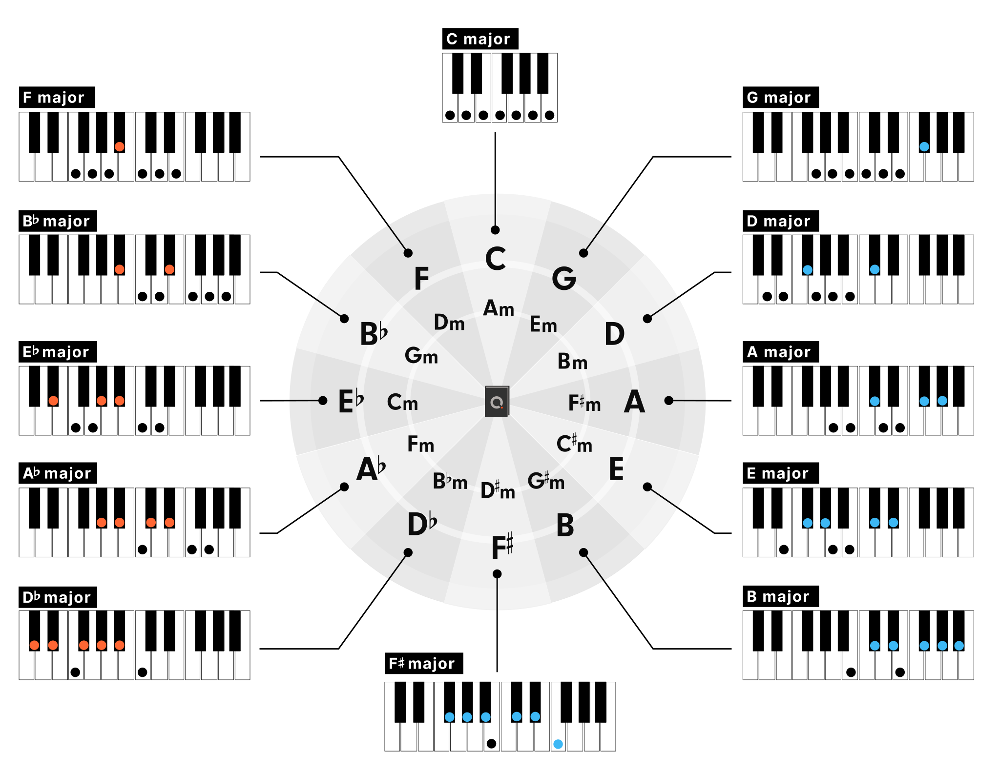

1. 认识五度圈
1. 认识五度圈
在讲解音阶时我们曾提到过：存在这样一件神兵利器，无需我们一次次笨拙地去数“”的台阶，就能瞬间看穿任意调应当在哪些音上加升降号。 它便是（Circle of Fifths / 5th）。在后续学习调性与和弦时，五度圈处处都能发挥惊人的辅助神威。首先，让我们一睹它的尊容！
 （PNG版本点此处）
（PNG版本点此处）

在一个八度之内，总共包含12个半音——7个白键与5个黑键。五度圈正是将这12个音符如同钟表表盘一样排列为同心圆环的示意图。在某些流派的教材中，可能会见到左右对称镜像颠倒的版本，但其数学与声学逻辑本质完全相同。
这些英文字母的环绕顺序乍看之下似乎颇具玄机，但这张五度圈实际上蕴藏着海量能够在实际作曲中直接调用的关键信息，堪称一张随身携带的*“圆盘音乐速查百科词典”*！ 究竟该如何使用它？让我们逐一拆解。
2. 五度圈的核心用法
五度圈最经典的日常用法，是根据调号快速查找乐曲的中心主音——即速查调的名称。例如，请观察钟表表盘上“3点钟”的方向：

在3点钟区域，绘制着“带有3个升号（♯）的五线谱调号”，以及“A”与“F♯m”两个标记符号。它们的含义分别是：
- A …… 代表“A大调（A Major Key）”
- F♯m …… 代表“F♯小调（F♯ Minor Key）”
这直接宣告了对应法则：“如果在乐谱开头看到了3个升号的调号，那么若是大调就是A大调，若是小调就是F♯小调”。 同时，五线谱上分别标注在 Fa、Do、Sol 位置上的3个升号，精确指示了在弹奏 A 大调自然音阶或 F♯ 自然小调音阶时，必须弹黑键升高的具体音符。
通过调号快速定调；演奏特定调时一眼看穿该升降哪些黑键——这正是五度圈最基础的实战妙用之一。
反过来，如果在某个协作场景下别人对你说：“这首歌的调是 A♭ 大调，后面编曲交给你了”，你该使用哪些基础主干音呢？五度圈同样能救急：在五度圈上，A♭ 大调静静坐落在8点钟方位。顺着它扫一眼，你就能立刻心领神会：只要在 Si、Mi、La、Re（B、E、A、D）这4个音上打上降号（♭），构成的音阶正是该调的基础音群！

有了五度圈，你彻底告别了每次写歌都费劲巴拉掰着手指头数“全-全-半-全-全-全-半”的原始计算！
五度圈就像一座桥梁，将调与音阶这种抽象的“概念世界”，与键盘打字编曲或实琴演奏的“物理现实”无缝缝合在一起。不仅如此，等后续踏入和弦篇之后，五度圈在和弦功能推导上还将展现出更为震撼的统摄力。
3. 实战定调推导练习
既然掌握了这件核心装备，我们不妨实战演练一下“判定调（Key）”的技巧。假设这样一个情境：你自己随手写出了一段动听的单音旋律，现在需要判定它属于什么调，并据此为它编配和弦伴奏。
写出了这样一段旋律，我们该如何着手分析？最关键的两个硬核线索，正是“旋律中使用了哪些黑键音”，以及用肉耳倾听捕捉到的“调性重力中心音（Tonal Center）”。综合这两大维度的信息，真相便会浮出水面。

观察该旋律的钢琴卷帘走势，你会发现：整个乐句中只出现了两个黑键升音——Fa（F）与 Do（C），即 F♯ 与 C♯。 它们绝不可能是 G♭ 和 D♭。因为谱中原本就正当地鸣响着还原的 G 和 D；更关键的是，查阅五度圈你就会明白，世界上根本不存在“只降 G 和 D 两个音”的自然大调体系。
反之，“只在 Fa 和 Do 上挂两个升号”的组合，在五度圈2点钟方位赫然在目——正是 D大调 / B小调！因此目标调锁定在它们身上具有极高嫌疑。此时再结合肉耳听觉，若能清晰感受到旋律最后稳稳落在了 D 音或 B 音上作为归宿中心，那便板上钉钉、绝无悬念！

推导到这一步，至于究竟该死扣为“D大调”还是“B小调”，在现代流行编曲中其实已经没有强行二选一的必要了。正如我们在前文反复强调的：这对“平行关系小调（Relative Key）”之间原本就共享同一套音阶材料，彼此的界限天然处于流动与暧昧之中。
明确了调性归属，接下来伴奏的编写就有了坚实的准绳：为所有乐器声部的 F 和 C 音统一打上升号，铺开和弦即可：
大功告成！在这段伴奏织体中，虽然透着一丝淡淡的感伤抒情，但主体和弦以明朗大三和弦为主干，因此在业界通常将其规范定性为“D大调”。
并非机械万能的100%公式
需要清醒指出的是：在某些复杂乐曲中，可能会出现局部临时借用外调音阶（离调）的情况，亦或是某些现代前卫流行风格根本无法单纯套用传统西方自然大小调体系来粗暴解释。因此请谨记：这种推导法并非能百分之百机械套准所有音乐。想要达到真正炉火纯青的精准分析，后续深入学习和弦篇与旋律外壳音理论依然必不可少。
无五线谱纯键盘版五度圈
为了照顾对五线谱调号有阅读障碍的流行与电子音乐制作人，我们专门制作了纯以现代钢琴黑白键直观标示各调音阶形态的“纯键盘版五度圈”：



五度圈在后续深入和弦功能走向（如著名的 2-5-1 下行循环）时，将继续扮演不可或缺的导航罗盘。在未来的章节中，它还会频繁亮相。
偶尔你会在其他资料中见到将逆时针排列称为“四度圈（Circle of Fourths）”或“Cycle of 5th/4th”等称谓，形式与旋转方向虽有微调，其内在数理逻辑完全同一。
在学习初期，大大方方借助五度圈这张“合法作弊纸”来卸下死记硬背的沉重负担，是防止从入门到放弃的关键护身符。请务必将它妥善收藏、随心调用！
核心小结
- 存在一张将所有调号升降规律凝练统合的经典图表——“五度圈”。
- 借助五度圈，既能顺藤摸瓜通过谱面调号反推调名与调式主音，也能在被告知调名时一眼看出该调所使用的全部音阶黑白键材料。
- 五度圈中蕴藏着洞察整个调性音乐宇宙核心重力法则的关键密码。